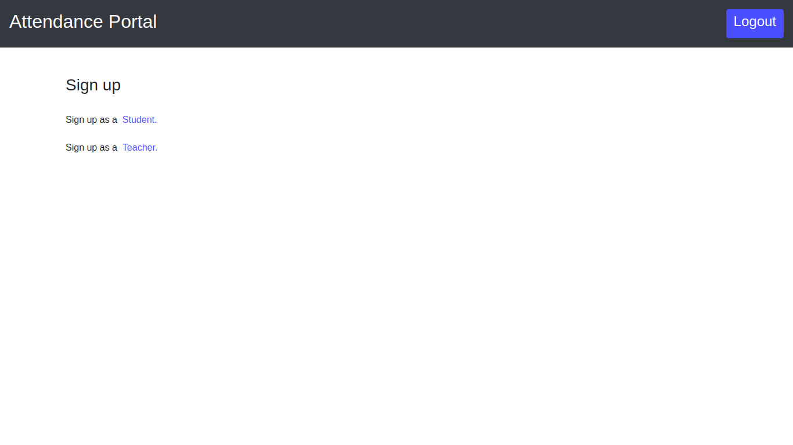

User Documentation¶
1. Preface¶
This document is targeted to the end user who will be using the Face Recognition Attendance System. It provides steps to set up the attendance system, procedures to use it and explanations to various features of the said system. The actual working of the internals of the system and relevant information related to it is provided in the Developer Documentation which is targeted at the developers and maintainers who will work on the system on the implementation side.
Currently the product is in development mode, hence the users might face issues and come across bugs. These issues will gradually be addressed in the subsequent versions of the product via software updates and patches.
This document tries to cover all the usable aspects of the product with adequate explanations and use cases if required. Absence of any feature in the document is either intentional , the feature being of no direct use to the user or will be added in further editions.
2. Introduction¶
Face Recognition Attendance System is a multi access point automatic attendance marking system that aims to make the task of taking attendance less cumbersome. This system takes over the conventional methods of taking attendance including roll calls and signing the attendance sheet, while also providing solution to a widespread problem among academic institutes: Proxy Attendance. This is kept in check by the use of Microsoft Azure Face Recognition Service for the actual task of facial recognition which is Microsoft’s state-of-the-art Facial Analysis Cognitive Service.
To mark the attendance, students just have to stand infront of one of the access points and their attendance will be registered with the system, which they can cross check on the system’s Student Portal. On the other hand, this makes organisation and maintenance of the attendance records for the course incharges a lot easier as the Faculty Portal also provides a comprehensive analysis of the data collected along with the simple attendance records for each student.
3. Components¶
The Face Recognition Attendance System follow the Server-Client model with the Server being on the institute’s local network hosting various portals and a RESTful API for communication with the client machines while the clients being Raspberry Pi machines installed inside the classrooms controlling the cameras.
3.1 Attendance Portal (Server)¶
The attendance portal hosts the user front ends for interaction with the students and faculty. It also provides the API endpoints which are used by the client machines for communicating with the server for schedule fetching and attendance marking. The server has two main ends:
3.1.1 Student Portal¶
Students portal can be accessed by going to the /signup/student/ endpoint on the server, where the student can register for the portal. Once he has an account on the service, he can check his attendance of the courses he has, in real time.
3.1.2 Teacher Portal¶
Similar to the students, teachers also can register by going to the /signup/teacher/ endpoint. Teachers have the facility to view all the students enrolled to the courses he is taking, see their attendance. The teacher can also schedule a lecture, which will enable the client side of the system to be activated at the appropriate time.

3.2 Raspberry Pi (Client)¶
The raspberry pi machines are installed in every classroom, their number being governed by the capacity of the class; for example, for a class of 100 students, four access points are sufficient. The raspberry pi’s are running on Arch linux with the face-recognition-daemon installed on them. As soon as the devices boot up, they start the daemon which connects them to the server.
Every 10 minutes the server is pinged via the API endpoint to fetch the next scheduled class and its time. If there is a class in the 20 minutes margin from the current time, the daemon starts taking pictures which are then analyzed by the Face API provided by the Microsoft Face SDK. If a student is identified in the picture, his/her roll number is sent to the server by using POST method on the API endpoint.
The configurations for the raspberry pi can be changed from the config.py file.